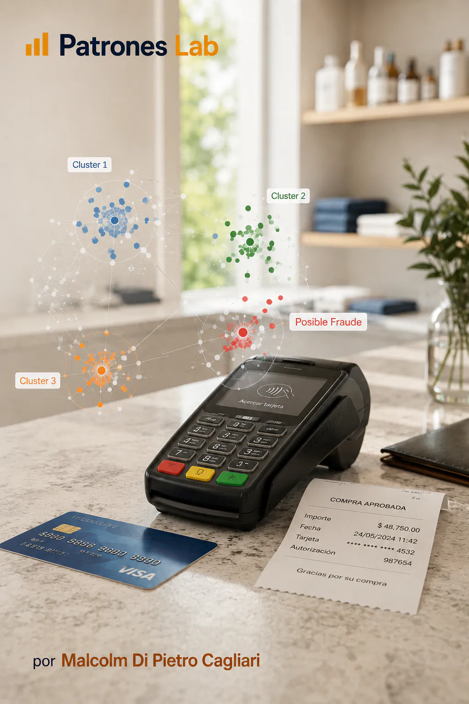

Modelo de Preços Airbnb
Modelo de classificação com regressão logística para identificar anúncios relativamente caros ou baratos dentro de cada tipo de alojamento.
Modelo de classificação com regressão logística para identificar anúncios relativamente caros ou baratos dentro de cada tipo de alojamento.

Modelo de regressão logística para estimar a probabilidade de golo de cada remate com dados públicos da StatsBomb, validação por jogo e aplicação ao Mundial Qatar 2022.

Classificação supervisionada com regressão logística para deteção de fraude com cartão de crédito.

Modelo de classificação para estimar danos económicos em eventos meteorológicos, comparando regressão logística com uma rede neuronal.

Clustering não supervisionado com K-means para deteção de fraude com cartões de crédito.

Clustering não supervisionado com DBSCAN para identificar possíveis fraudes com cartão de crédito.